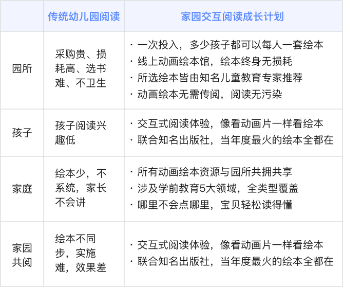
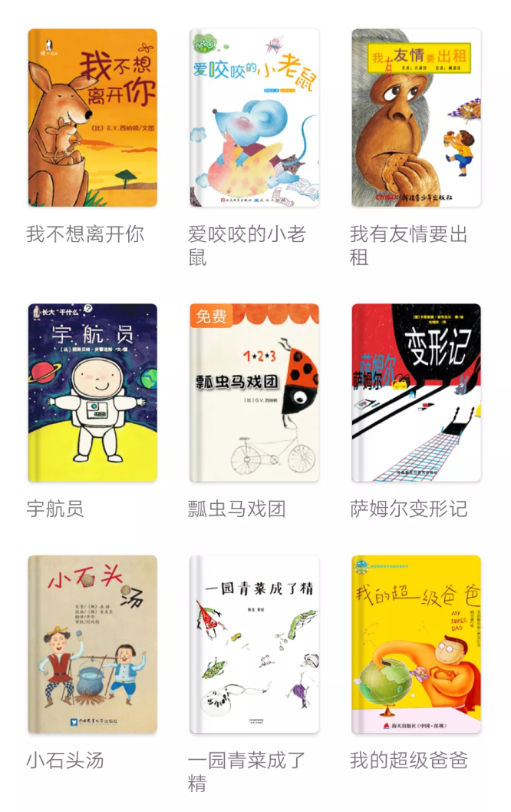

全学期总科目
合作园所
什么是家园交互阅读
“交互阅读”是指以“动画绘本”为载体，通过动画、声音、游戏、交互、AI老师、智能阅读报告、智能评测等功能，充分调动孩子的眼、耳、口、手、脑等器官，让孩子全感官参与阅读，与书中的动物、人物、景物进行互动，为孩子提供全新立体动画交互式阅读方式，实现情景沉浸式阅读，感受前所未有的交互式阅读体验，轻松爱上阅读。
除了孩子和内容的“互动”外，孩子与家长、老师之间的互动也是“交互阅读”的一个重要组成部分。老师可以通过“动画绘本馆”APP向家长和孩子远程推送每日阅读书目、阅读测验等，不受疫情等特殊情况限制；家长和老师也可以对孩子阅读的书目类型、数量、时长等阅读效果进行实时或定期检验，通过孩子与内容的交互情况反馈，对其多维度能力是否提升进行综合分析。同时，家长还可以通过“动画绘本”的伴读模式，在“亲子阅读”中深入了解孩子的阅读现状，实现孩子和家长之间的交互。
交互阅读成长计划的构成
1.海内外经典绘本，全园孩子每人都可以有
· 大奖绘本，经典名作，全年累计308本
· 一园购买，全园共阅
2.班班都有科学阅读计划
· 每月1主题/每周5本书（1精读4泛读）
· 全年周周有书看
3.全年多种培训计划落地，保证园所工作顺利开展
· 120节名师动画绘本教案
· 120个“区角游戏”方案
· 16节交互阅读名师讲堂
· 专属顾问即时在线沟通
和传统阅读的对比

经典书目
查看全部书目什么是动画书
动画书是一种全新的电子书形态，介于纸质书与动画片之间，具有动画、声音、游戏、交互、AI老师、智能阅读报告、智能评测等功能。它既保留了纸质图书的阅读体验，又有动画片的趣味性，可以充分调动孩子的眼、耳、口、手、脑等器官，让孩子全感官参与阅读，与书中的动物、人物、景物进行互动，感受前所未有的交互式阅读体验，轻松爱上阅读。
将动画书应用于教学，用动画书实现促进幼儿学习品质的发展、促进五大领域发展目标的达成也正是基于此理念。动画书作为纸质绘本的升级产品，添加了声音、音乐、游戏、动画、交互等功能，能够支持儿童热情投入地进行主动学习，更加符合儿童的年龄特点与学习和发展要求，更有利于教学的游戏化和循序渐进，是真正面向未来的又一种学前儿童教育方式。——教育学博士，北京师范大学教授，博士生导师霍力岩
——教育学博士，北京师范大学教授，博士生导师
霍力岩
“动画绘本馆”优秀样板园
公安部幼儿园
中国科学院幼儿园
解放军信息工程大学幼儿园
武汉大学幼儿园
暨南大学幼儿园
北京红缨教育集团
北京师范大学实验幼儿园
河南省粮食局幼儿园
山东省实验幼儿园
河南科技学院幼儿园
山东省民政厅幼儿园
……